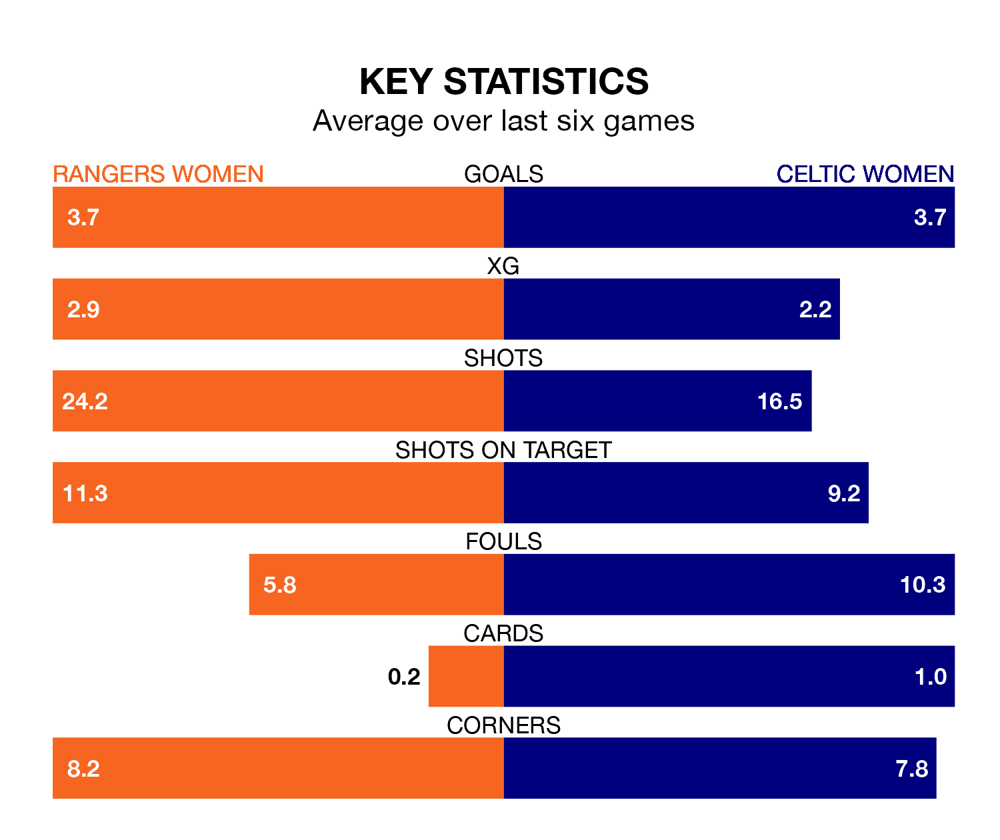

SWPL 1's top two sides face each other at the Broadwood Stadium in Sunday's kick-off, when Rangers Women host second-placed Celtic Women.
Rangers have picked up 18 wins and two draws from 20 games so far this season, and sit four points above the visitors going into the 3.010pm match.
Celtic, meanwhile, have won 17 and drawn one, picking up 52 points.
With 95 goals in 20 games so far this season, Celtic are the league's highest scorers with 4.8 goals per game. And they are conceding fewer than average, letting in 11 goals at a rate of 0.6 per game.
Rangers are also above average scorers, with 4.4 goals per game, compared to a league average of 2.1. They have conceded 0.4 goals per game.
With Jenna Fife between the sticks, the home team can rely on one of the league's safest pair of hands. She has kept nine clean sheets in her 16 appearances this season, and no 'keeper has prevented the opposition scoring more often in SWPL 1.
In the visitors' net, Kelsey Daugherty also has nine clean sheets in 16 games. She has conceded a goal every 144 minutes, 40% more often than the 206 minutes between goals for Fife.
Rangers are in fantastic form in SWPL 1, with five wins and a draw from their last six games.
With four wins and a draw over that period, Celtic's form is worse – they have taken 13 points from 18, compared to Rangers's 16.
In the last 10 years, Rangers and Celtic have played each other on 13 occasions. Rangers won six of them, Celtic five, and they drew twice.
On average, Rangers scored 1.2 goals and Celtic 1.0 in those matches.
Their last meeting was on January 19, when Rangers won 3-2 away.
Rangers's last match was on February 11, a 0-0 draw against Partick Thistle Women.
Celtic beat Hibernian Women 3-1 last time out, also on Sunday, with Natasha Jane Flint (two) and Caitlin Hayes on the scoresheet.
Updated: 13:30 (UTC), 12/02/24